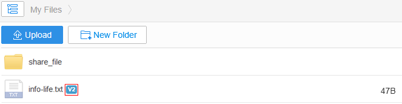
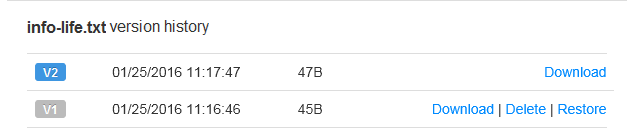

How Can I Obtain a File with an Earlier Version?
<<Back to Help CenterSeveral historical versions of the same file are saved in StorBox to ensure that a user can view all versions of the file.
If there are multiple versions for a file, Vx is displayed to the right of the file name. x indicates the version quantity.

- Log in to StorBox website.
- Right-click a file with multiple versions and choose View Version.
- View version information, download, delete or restore the file with a specific version.
